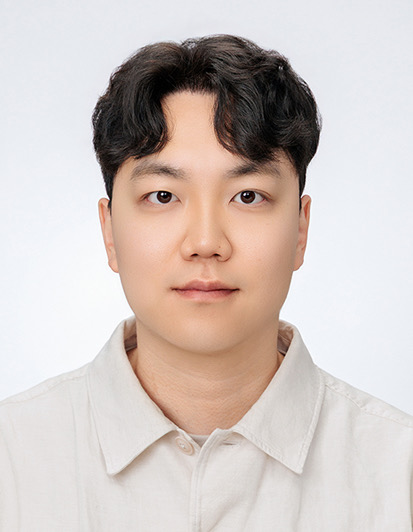

|
Jihwan Moon
I'm a Ph.D. candidate at Seoul National University, in the Vision and Learning Lab, advised by Prof. Gunhee Kim. My ultimate research goal is to make AI available to everyone at low or no cost.
To this end, my current primary interests include local (greedy block-wise) learning of LLMs, decentralized learning, and data valuation and selection. I was, and still am, interested in multimodal AI, with an emphasis on multimodal representation learning and data-centric multimodal learning.
Email /
CV /
Scholar /
Github /
LinkedIn
|

|
Research
My research spans efficient and accessible learning — from local (greedy block-wise) learning and decentralized learning to data valuation and selection for multimodal models. An asterisk (*) denotes equal contribution.
|
|
|
ReSpec: Relevance and Specificity Grounded Online Filtering for Learning on Video-Text Data Streams
Jihwan Moon*,
Chris Dongjoo Kim*,
Sangwoo Moon,
Heeseung Yun,
Sihaeng Lee,
Aniruddha Kembhavi,
Soonyoung Lee,
Gunhee Kim,
Sangho Lee,
Christopher Clark
CVPR, 2025
arXiv
An online filtering framework that selects relevant and specific samples from video-text data streams, reaching state-of-the-art zero-shot video retrieval with as little as 5% of the data.
|
|
|
Sample Selection via Contrastive Fragmentation for Noisy Label Regression
Chris Dongjoo Kim*,
Sangwoo Moon*,
Jihwan Moon,
Dongyeon Woo,
Gunhee Kim
NeurIPS, 2024
arXiv /
OpenReview /
code
Modeling regression data as contrasting fragmentation pairs enables robust sample selection under noisy labels, introducing the Error Residual Ratio metric and six curated benchmarks.
|
|
|
SEDONA: Search for Decoupled Neural Networks Toward Greedy Block-wise Learning
Myeongjang Pyeon,
Jihwan Moon,
Taeyoung Hahn,
Gunhee Kim
ICLR, 2021
OpenReview /
code
A differentiable search that automatically decouples a network into gradient-isolated blocks for greedy block-wise learning, outperforming end-to-end backprop on CIFAR-10, Tiny-ImageNet, and ImageNet.
|
|
{kind=link}